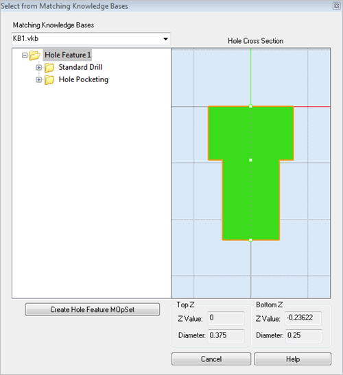

During the Create Machining KB for Selected Hole Feature command, this dialog is displayed when matches to the hole feature are found in multiple Knowledge Base files. It allows you to select which Knowledge Base to use when creating the Hole Feature machining operation. See Features tab, Machining Objects (Mobs) Browser for more information about using Hole Feature machining. See K-Bases tab and Knowledge Base for more information about knowledge bases.
During the Create Machining KB for Selected Hole Feature command, this dialog is displayed when matches to the hole feature are found in multiple Knowledge Base files. It allows you to select which Knowledge Base to use when creating the Hole Feature machining operation. See Features tab, Machining Objects (Mobs) Browser for more information about using Hole Feature machining. See K-Bases tab and Knowledge Base for more information about knowledge bases.
 Dialog Box: Select from Matching Knowledge Bases |
The multiple Knowledge Bases that contain cross-section matches to the selected Hole Feature are listed in the drop-down menu. Select a Knowledge Base and the matching Hole Feature operation is displayed in the window on the left. |
The Hole Cross Section pane of the dialog shows you a graphical cross-section representation of the selected Hole Feature. See Hole Feature Cross-Section Rules. These rules are applied when a detected hole feature's cross-section varies from those found in the Default AFM Knowledge Base. |
Select this button to generate a new machining operation from the Hole Feature located in the selected Knowledge Base. They will be place under your current Setup in the Machining Objects Browser. You can then select each operation to review/edit any of it parameters such as Cut Parameters, Tool, Feeds & Speeds, Clearance, etc.
|